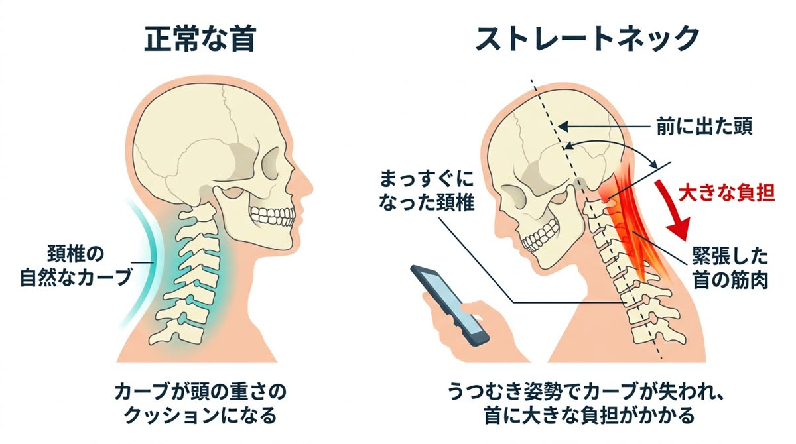
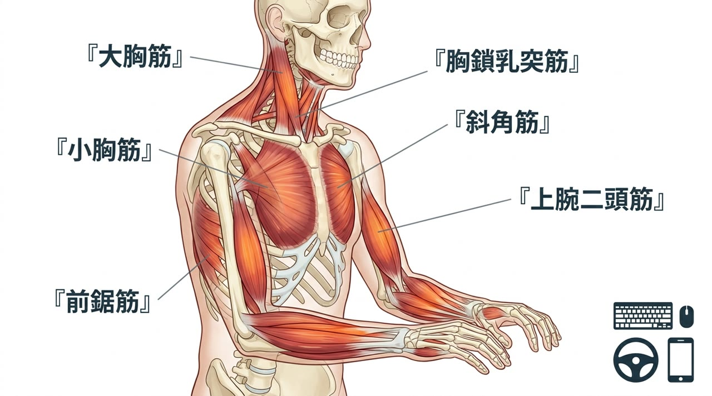
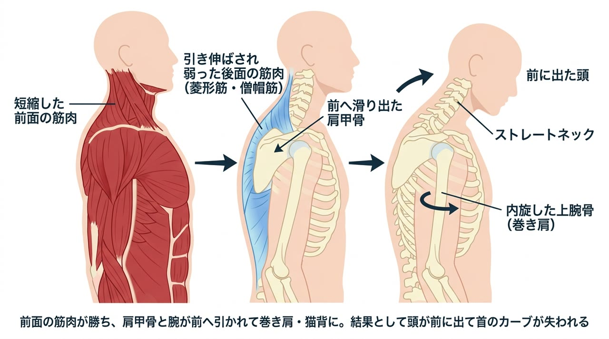

「姿勢が悪いからですね」——どこへ行っても同じ説明で、結局良くならなかったあなたへ。“なぜ姿勢が崩れるのか”を、筋肉のレベルまで掘り下げてお話しします。

私たちの首の骨（頚椎）は、本来ゆるやかに前へカーブ（前弯）しています。このカーブは、約5〜6kgある頭の重さを受け止め、衝撃を分散させる天然のクッション（バネ）です。
ストレートネックとは、このカーブが失われて頚椎がまっすぐに近くなった状態。クッションを失った首は、頭の重さと衝撃をまともに受け続けることになります。

——ここまでは、どのサイトにも書いてあります。本当に大切なのは、次の「なぜカーブが失われるのか？」です。ここを理解して初めて、正しい対処ができます。
結論から言います。犯人は首ではなく、「一日中、腕を体の前で使い続ける」という現代人の生活そのものです。
思い出してみてください。デスクワークではキーボードとマウスに手を置き、通勤ではハンドルを握り、家ではキッチンに立ち、休憩中はスマホを持つ。これらに共通しているのは、両腕を体の前に出し、ひじを曲げ（屈曲）、脇をしめて手を体の中心へ寄せた姿勢（水平内転）を、一日中キープし続けているという点です。
この「腕を前で保持する」動作を担っているのが、次の筋肉たちです。
これらの筋肉を毎日、何時間も、何年も酷使すると、筋肉は縮んで硬くなり、「短縮」した状態で固定されていきます。


筋肉は、必ず「表と裏」でペア（拮抗筋）になって、骨を引き合いながらバランスを保っています。ところが前面の筋肉ばかりを酷使すると、このバランスが崩れます。
短縮して強くなった前面の筋肉が“勝ち”、使われずに引き伸ばされた後面の筋肉（菱形筋・僧帽筋の中部〜下部）が“負ける”——この綱引きの結果、骨は前面の筋肉に引っ張られていきます。
具体的には、短縮した小胸筋が肩甲骨を前へ傾け、大胸筋が上腕骨を内側へねじり（内旋）、肩甲骨は肋骨に沿って前へ滑り出て（外転・前傾）、巻き肩になります。すると背中（胸椎）が丸まって猫背になり、その上に乗る頭は前へ押し出されます。前に出た頭を落とさないよう、今度は首の斜角筋・胸鎖乳突筋・後頭下筋が休みなく緊張し続け、頚椎の前弯カーブは引き伸ばされて消えていく——これがストレートネックの完成です。

首の後ろが張るのは、前に落ちた頭を支えている“結果”の緊張です。そこを揉んでも一時的に軽くなるだけで、頭を前へ引っ張っている大胸筋・小胸筋・前鋸筋の短縮は、まったく解けていません。施術院を出てキーボードやスマホに戻った瞬間、また同じ力で引っ張られ、元通りになります。
「姿勢を正しましょう」も同じです。意識して胸を張れるのはその瞬間だけ。短縮した前面の筋肉と、弱って働けなくなった後面の筋肉を、そのままにして意識だけで姿勢を保つのは不可能です。意志の弱さではなく、筋肉の状態の問題なのです。
原因が「前面の短縮 × 後面の弱化 × 日常の腕の使い方」である以上、やるべきことは明確です。当院は次の5つを、あなたの状態に合わせて組み立てます。
原因の本丸である大胸筋・小胸筋・上腕二頭筋・前鋸筋の硬さを、狙って緩めます。ここが緩まないと、頭を前へ引く力は消えません。
前に出た頭を支え続けて悲鳴を上げている斜角筋・胸鎖乳突筋・後頭下筋の緊張を解き、首こり・頭痛を軽減します。
引き伸ばされて眠っている菱形筋・僧帽筋中下部・深部の頚屈筋を再教育し、肩甲骨と頭を正しい位置へ引き戻す力を取り戻します。
丸まった胸椎や後傾した骨盤を矯正し、頭が自然に背骨の真上に乗る“土台”をつくります。
ここを変えなければ必ず再発します。机・モニター・スマホの高さ、腕の置き方、こまめに肩甲骨を戻すセルフケアまで、あなたの生活に合わせて具体的にお伝えします。

お仕事や生活での腕の使い方・スマホ時間・症状の経過を詳しく伺い、どの筋肉に負担が集中しているかを推測します。

頭の位置・肩甲骨の開き・前面と後面の筋肉の硬さ／弱さを検査し、あなたのストレートネックの“設計図”を明らかにします。

短縮した前面筋のリリース→後面筋の活性化→土台の矯正を行い、腕の使い方・環境改善までお伝えします。
首の張りは“結果”で、“原因”は胸や腕の前側の筋肉（大胸筋・小胸筋・上腕二頭筋・前鋸筋）が短縮して頭と肩甲骨を前へ引いていることです。首だけを揉んでも前側の引っ張りは解けず、すぐ戻ります。当院は前面と後面のバランスから整えます。
骨自体が変形しているわけではなく、多くは筋肉のアンバランスでカーブが引き伸ばされて“まっすぐに見えている”状態です。原因の筋肉バランスを整えることで改善が期待できます。長年放置したケースほど時間がかかるため、早めのケアがおすすめです。
できます。やめる必要はなく、「短縮した筋肉を解く」「弱った筋肉を働かせる」「腕の置き方・机やモニターの高さを変える」の3つで、負担のかかり方そのものを変えます。生活を変えずに結果を出す設計です。
関係していることが多いです。短縮した小胸筋・斜角筋が神経や血管を圧迫すると腕・手のしびれ（胸郭出口症候群）に、首の持続的な緊張は緊張型頭痛につながります。首だけでなく原因の筋肉までみる必要があります。
RESERVATION
「結局ここも同じ」で終わらせない。原因から変えましょう。